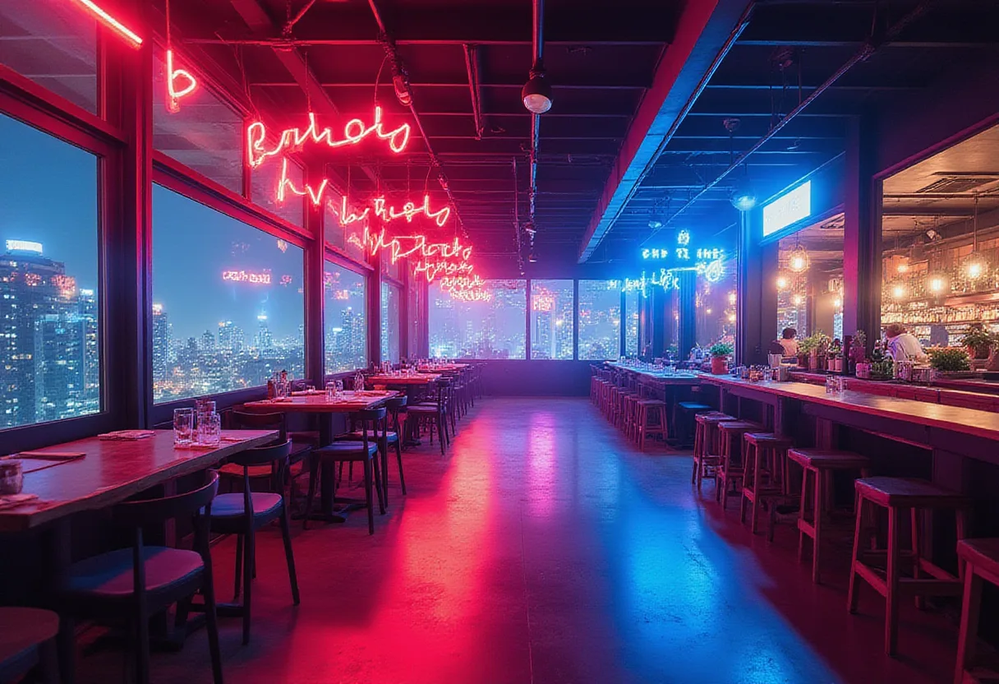

등촌 비즈니스클럽 & 유흥 정보 허브

다양한 업종을 한눈에 비교하고, 상황별 최적 선택을 돕습니다.
등촌 셔츠룸
- 특징
- 와이셔츠 차림 매니저가 접객하는 중상급 유흥. 밝고 모던한 인테리어와 아담한 룸.
- 가격대
- 1인 20~40만원 (룸티+주대+TC)
- 이용 방법
- 2부제 운영, 사전 예약 권장.
- 추천 상황
- 편하지만 고급스러운 분위기를 원하는 20~40대 직장인·MZ.
등촌 룸싸롱
| 항목 | 내용 |
|---|---|
| 특징 | 대형 룸, 양주와 매니저 동석, 샹들리에·대리석·벨벳 소파, 방음 완비. |
| 가격대 | 1인 30~70만원 (룸티+주대+TC) |
| 이용 방법 | 1부(저녁)·2부(심야) 운영, 2부가 고가. |
| 추천 상황 | 기업 임원 접대·비즈니스 미팅·VIP 고객 응대. |
등촌 텐프로
※ 가격은 공개되지 않으며, 회원제 및 지인 소개가 일반적입니다.
- 특징
- 강남·청담·압구정 수준의 최상위 유흥. 발렛·전용 출입구·완벽 방음, 명품 가구·미술품.
- 가격대
- 1인 50~100만원 이상, 가격표 없는 회원제 존재.
- 이용 방법
- 지인 소개 필수, 사전 예약 및 신원 확인 절차.
- 추천 상황
- 기업 오너·유명인·재력가 등 절대적 프라이버시가 필요한 고객.
등촌 텐카페
- 특징: 카페·라운지·유흥 하이브리드. 커피·차와 매니저와의 대화가 메인.
- 가격대: 1인 20~40만원 (음료+룸티+TC), 시간당 연장 가능.
- 이용 방법: 낮 시간대 영업, 사전 예약 권장.
- 추천 상황: 술이 부담스러운 고객·조용한 대화 선호층.
등촌 쩜오
텐프로 바로 아래, 룸살롱 위의 고급 유흥으로 “룸살롱은 싫고 텐프로는 부담스러운” 고객층을 공략합니다.
- 가격대
- 1인 40~70만원
- 이용 방법
- 예약제, 어두운 라운지와 룸 하이브리드 운영.
- 추천 상황
- 전문의·변호사·임원 등 전문직 고객, 교양 있는 대화 선호.
등촌 하이퍼블릭
| 구분 | 내용 |
|---|---|
| 특징 | 룸살롱과 셔츠룸 사이 하이브리드, 캐주얼 오픈 분위기, 네온사인·감각적 조명. |
| 가격대 | 1인 15~30만원, 맥주 등 주류 선택 자유. |
| 이용 방법 | Bar 형태 + 룸 혼합, 2차 장소로 활용. |
| 추천 상황 | 20~40대 넓은 연령층, 2차 모임·가벼운 회식. |
등촌 풀싸롱
룸살롱·식사·노래방·공연이 한 공간에 결합된 올인원(풀코스) 유흥.
- 가격대
- 1인 20~40만원 (패키지 포함)
- 이용 방법
- 넓은 홀·룸·식당·무대, 노래방 기기 구비. 사전 예약 권장.
- 추천 상황
- 단체 회식·동창회·송년회 등 이동 없이 모든 서비스를 이용하고자 할 때.
등촌 가라오케
- 특징: 방음 룸에서 주류·안주와 함께 노래를 즐김.
- 가격대: 일반 가라오케와 동일, 시간당 요금 별도.
- 이용 방법: 예약 또는 현장 결제, 최신 곡 리스트 제공.
- 추천 상황: 회식 2차·단체 모임, 노래와 음료를 동시에 즐기고 싶을 때.
등촌 노래방
- 특징
- 방음 부스에서 노래를 부르는 시설. 코인노래방(곡당 500~1,000원)·시간제(15,000~25,000원).
- 가격대
- 코인제와 시간제 각각 상이.
- 이용 방법
- 선불 결제 또는 카드 결제, 최신곡 업데이트 주기.
- 추천 상황
- 가벼운 개인 이용·친구와의 즉흥적인 노래 즐김.
등촌 마사지
- 특징
- 스웨디시식 전신 오일 마사지, 아로마·스톤·딥티슈 옵션 제공.
- 가격대
- 코스별 6~15만원 (60~120분)
- 이용 방법
- 1인 프라이빗 룸, 샤워실 구비, 사전 예약 권장.
- 추천 상황
- 직장인 피로 회복·정기 방문·멤버십 이용 고객.
등촌 펍
- 특징
- 수제 맥주와 안주 제공, 바 카운터와 테이블 좌석.
- 가격대
- 맥주 6,000~9,000원, 안주 8,000~15,000원.
- 이용 방법
- 1차 자리로 적합, 라이브 음악·스포츠 중계 가능.
- 추천 상황
- 가벼운 저녁 모임·친구와의 첫 만남.
자주 묻는 질문
- 등촌 비즈니스클럽은 어떤 상황에 적합한가요?
- 조용한 비즈니스 미팅이나 소규모 사교 모임에 최적화돼 프라이버시와 품격을 중시하는 경우에 적합합니다.
- 텐프로와 텐카페의 차이는 무엇인가요?
- 텐프로는 최상위 프라이버시와 고가 회원제로 운영되는 반면, 텐카페는 대화 중심의 카페 라운지 형태이며 술보다 대화가 메인입니다.
- 하이퍼블릭과 셔츠룸은 가격 차이가 어떻게 되나요?
- 하이퍼블릭은 1인 15~30만원으로 캐주얼하고 접근성이 높으며, 셔츠룸은 1인 20~40만원으로 중상급 고급스러움을 제공합니다.
- 풀싸롱을 예약할 때 주의할 점은?
- 다양한 시설이 한 공간에 포함돼 있어 인원수와 이용 시간, 포함 메뉴를 사전에 확인하고 예약하는 것이 중요합니다.
홍길동 — 등촌 지역 유흥 정보를 5년간 정리해온 로컬 가이드